18 张 · 左 Reborn / 右 ASCII · 点击查看原图
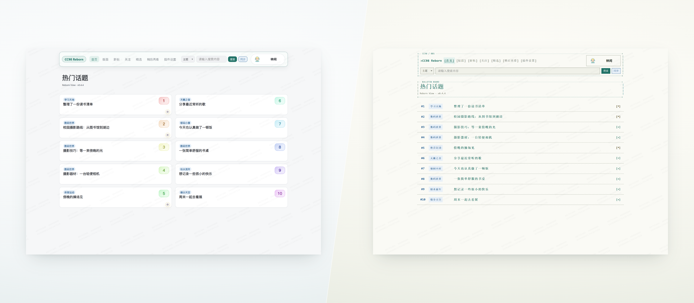
“重构几乎所有 CC98 主站页面”之后；也可放在“其他便利功能”的首页十大条目后
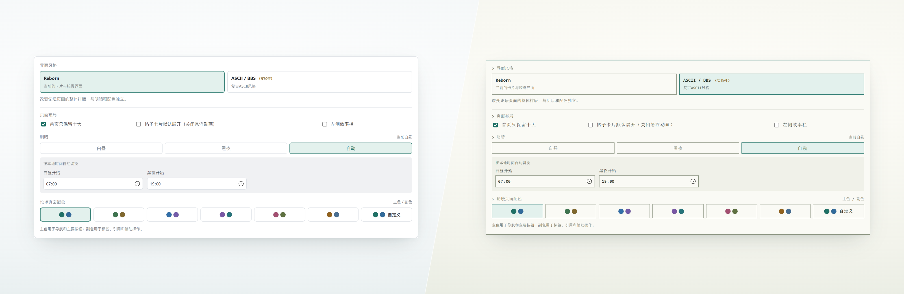
明暗与配色、Reborn / ASCII 两个条目后
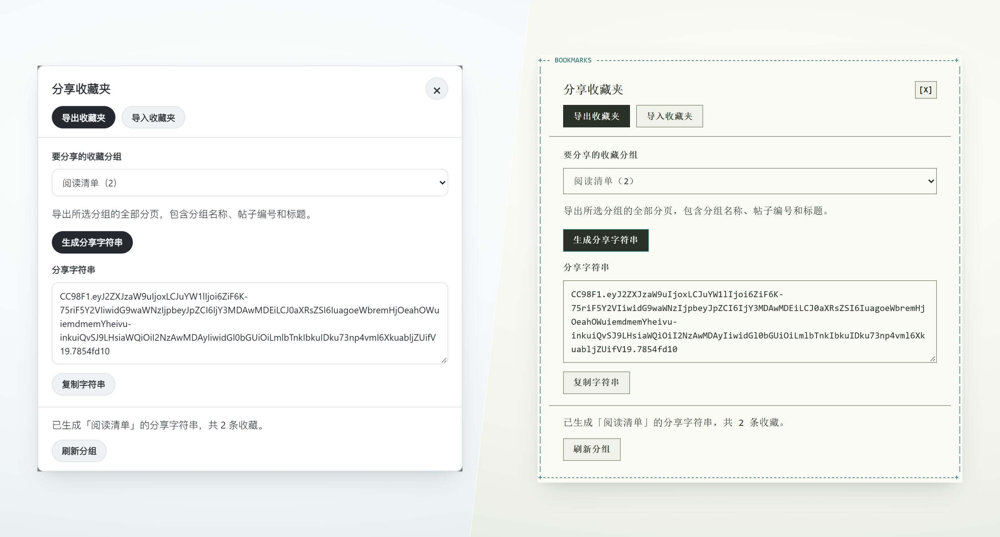
“分享收藏夹”、本地用户备注条目后，与下一张连续放置
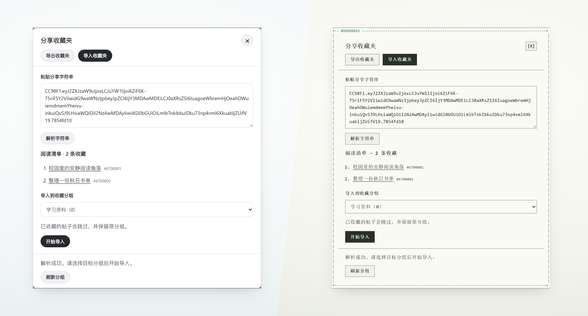
紧接导出收藏夹图
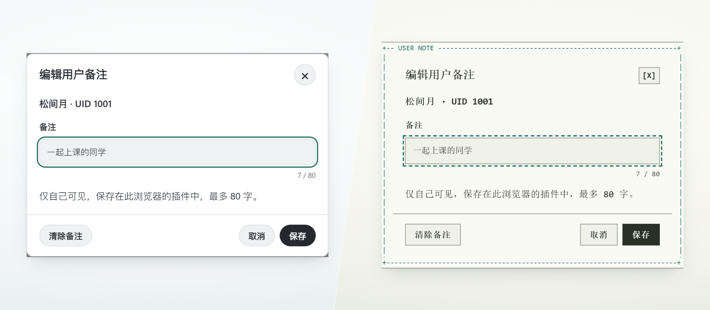
“分享收藏夹”、本地用户备注条目后
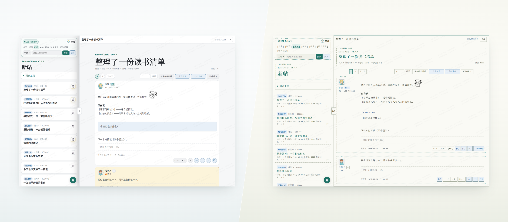
帖子侧窗、左侧继续浏览条目后
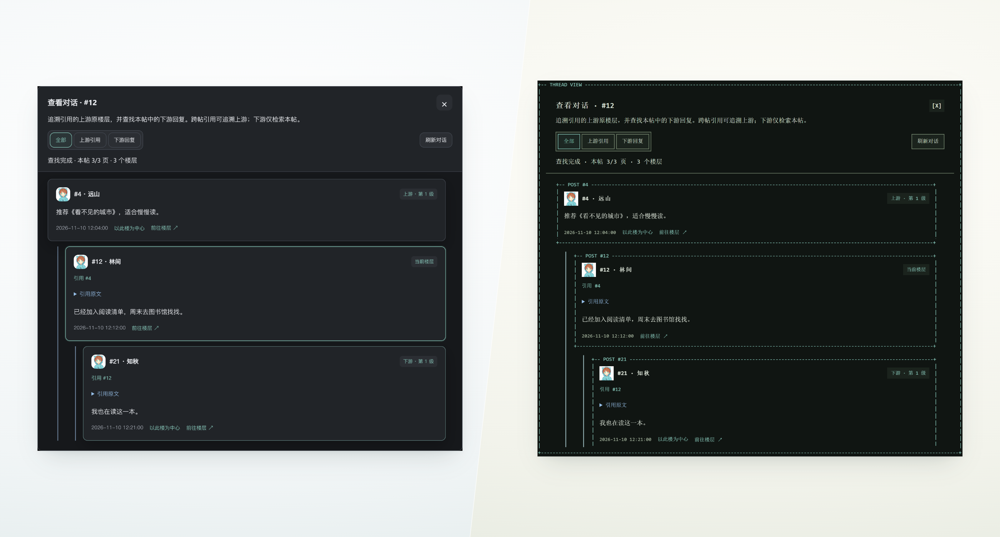
“查看对话”条目后
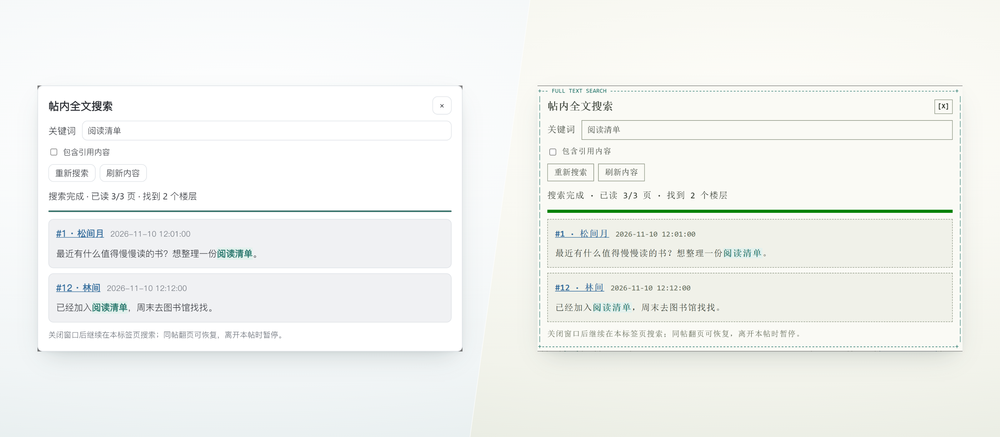
“全文搜索”条目后
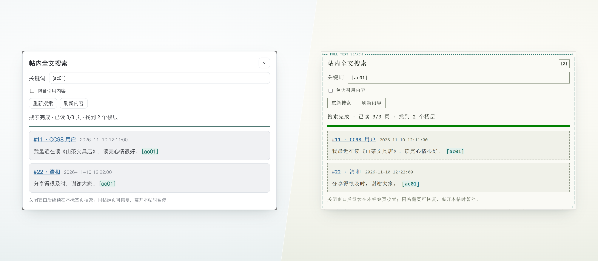
紧接帖内全文搜索图
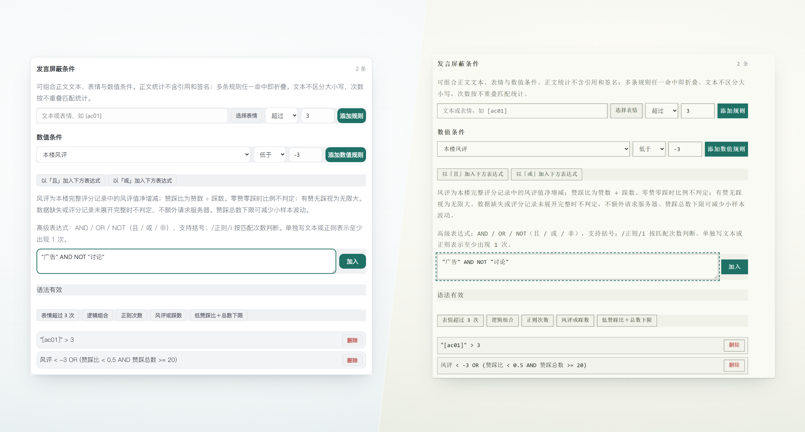
“高级用户屏蔽规则”条目后
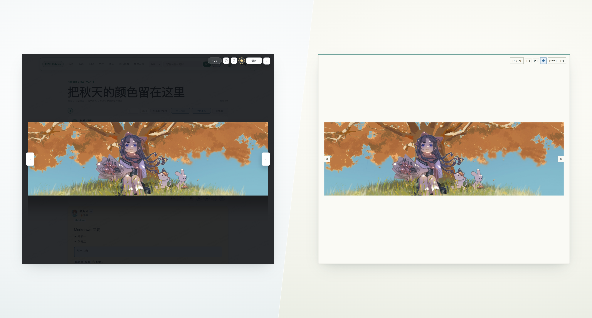
图片放大、鼠标焦点缩放条目后
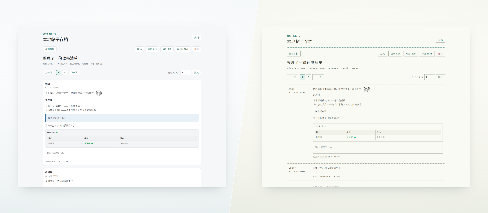
“存档本帖”条目后
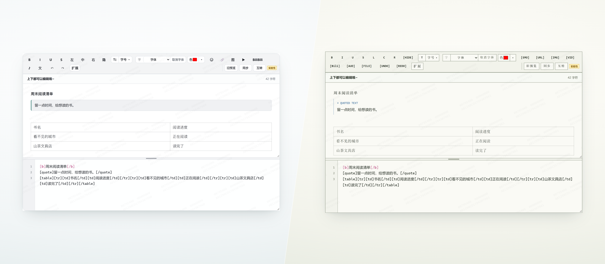
上下双区编辑条目后
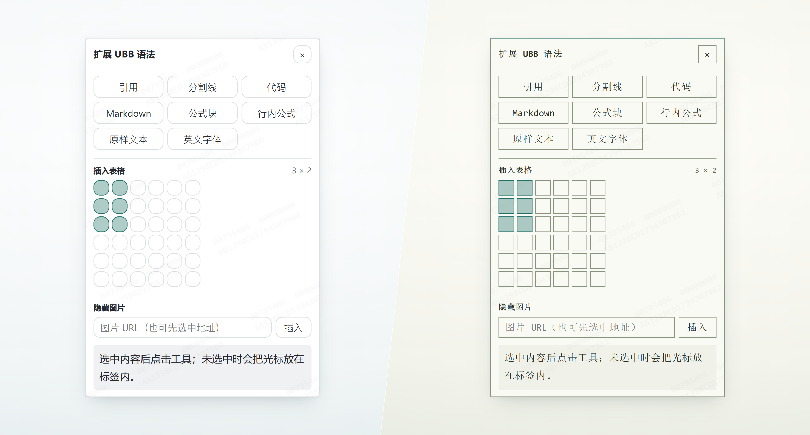
“扩展”工具条目后
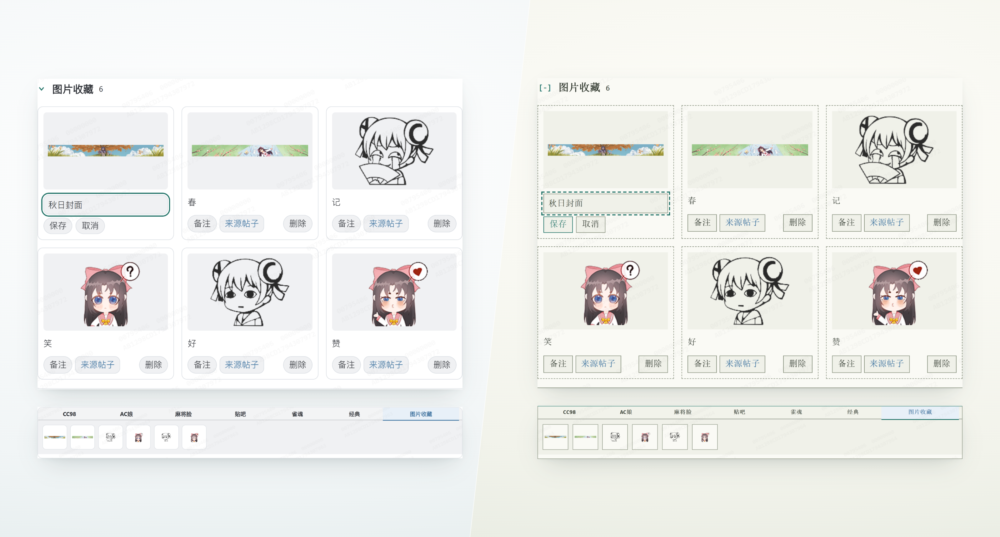
原站上传、表情、图片能力条目后；上方为图片收藏，下方为编辑器内的图片收藏标签页
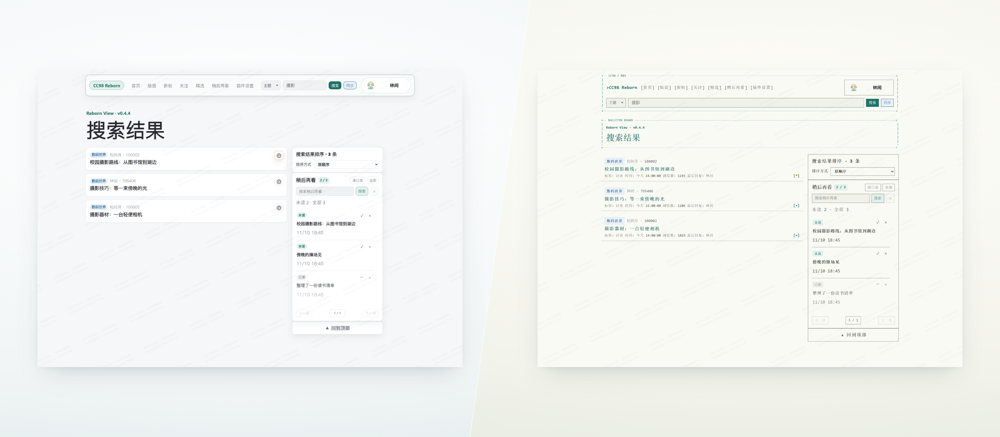
搜索结果排序条目后
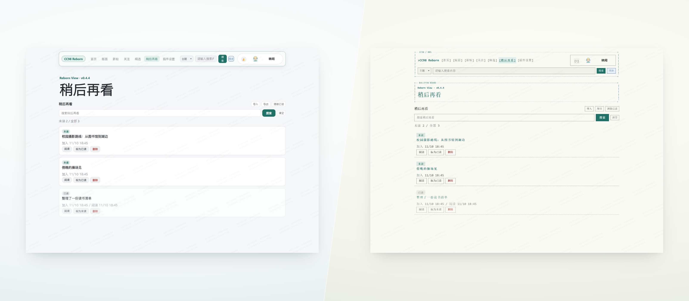
完整“稍后再看”页面条目后
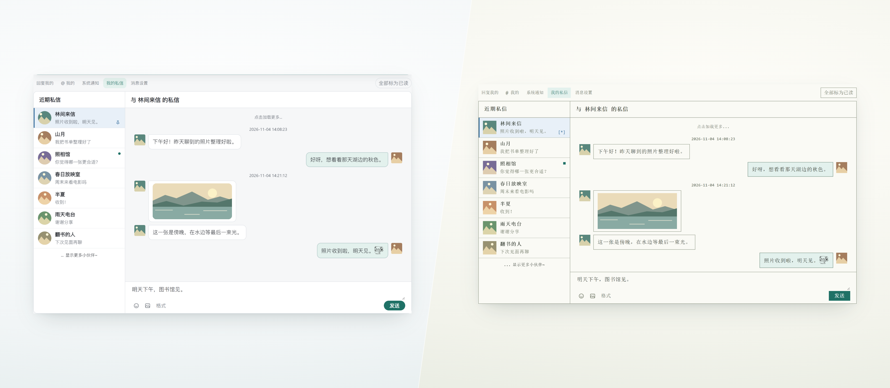
近期私信联系人置顶条目后